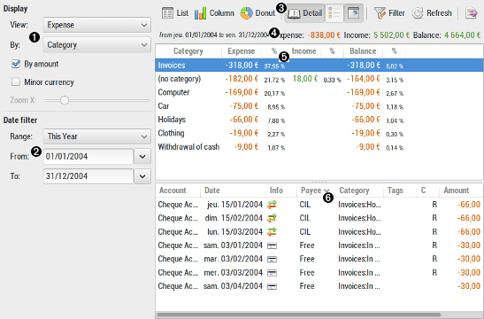
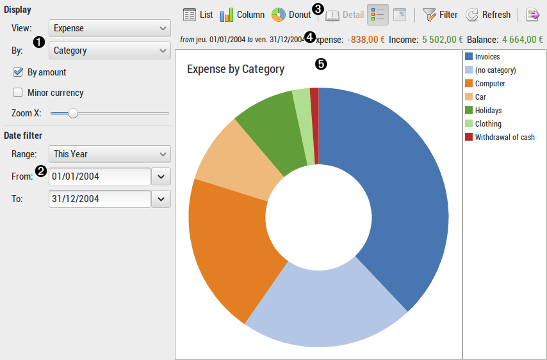

Using statistics report
 
 Display
Display
| View |
filter the result to:
|
|---|---|
| By |
specify the item the result should be computed for:
|
| By amount | sort the result by amount instead of the default order alphabetical for Category/Payee or chronological for Month/Year |
| Zoom X | select the X zoom factor in real time |
 Date filter
Date filter
| Range | fast select a date with predefined range |
|---|---|
| From / To | specify date bound limit to restrict the results to |
 Tool-bar
Tool-bar
The tool-bar is the main control of the display. All tool-button have a tool-tip that will help you know what action will be launched when you click on the tool-button.
 Total
Total
This is the total of columns of the list-view for: Expense, Income, Balance.
 Result list / Column chart / Donut chart
Result list / Column chart / Donut chart
The result list display the computed amounts according to the current selection and filter.
 Transaction detail list
Transaction detail list
The transaction detail list will show every transaction of the selected item in the above result list.
By default it is not visible. Use the tool-bar 'Toggle detail' button for changing this.
You can also default keep it visible in the Preference dialog